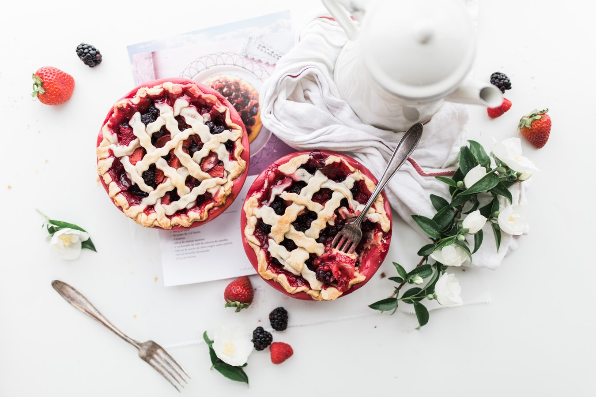
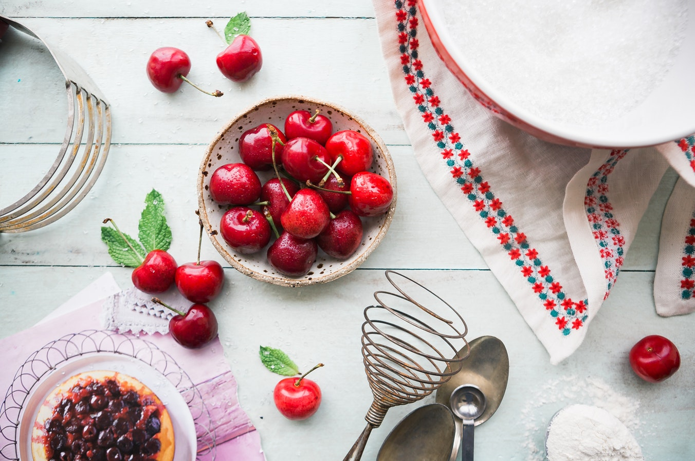

this recipe is borrowed from my friends at Garlic and Zest, but it was so unbelievably delicious when I made it that I just had to share!

i’ve always been fond of summertime, and especially all the delicious fruit that comes with it! i have memories of playing outside with my friends as a child, splashing around in the pool or running about the lawn, then biting into thick, juicy cherries and watching the red juice drip down our arms.

good cherries are, in my opinion, some of the best produce summer has to offer! these seasonal treasures, combined with my year-round loves, strawberries and blueberries, make an excellent pairing.
ingredients:
2- 9-inch pie crusts
12oz. dark cherries, pitted
1 ½ cups blueberries
1 cup strawberries
⅔ cup sugar
4 tablespoons cornstarch
⅛ teaspoon salt
1 tablespoon orange zest
2 tablespoons juice from the orange
½ teaspoon lemon zest
¼ teaspoon almond extract (substitute vanilla extract for nut allergies)
1 egg, beaten + 2 tablespoons water
2 tablespoons demerara sugar for dusting
directions:
In a large bowl, combine the sugar, cornstarch, salt, orange zest, lemon zest, orange juice and almond extract. Add the cherries and blueberries. Toss to combine and set aside for 30 minutes.
Lay a sheet or two of plastic wrap on a work surface. Place the pie crust on the plastic wrap. Lay another sheet of plastic wrap over the pie crust. Roll the pie crust out to a 12 -13" diameter. Remove the top layer of plastic and transfer the crust to a 9" ceramic or glass pie plate. Press the bottoms and sides firmly into the pie plate. Use a sharp knife to trim the edges and refrigerate.
Place the second pie crust on the plastic wrap and cover with the second piece of plastic wrap. Roll the second crust out to a 12"-13" diameter. Use a sharp knife or pizza cutter to cut the pastry into even, 3/4" strips. Transfer the crust (plastic wrap and all) to a flat surface and refrigerate.
Preheat the oven to 400°.
When the berries have macerated for half an hour, give them a stir to ensure they're well combined with the sugar mixture and transfer the fruit to the pie shell and smooth to an even layer. Lay 5 pieces of pastry strips. evenly spaced over the fruit and pie -- letting the ends hang over the sides of the shell. Rotate the pie plate 90° and begin to weave the lattice with 5 remaining strips of pastry. Tuck the hanging ends under the edge of the bottom crust and press together with a fork or create a fluted edge with your fingers.
Use a pastry brush to brush the egg wash onto the lattice and edges of the crust. Sprinkle the crust with demerara sugar.
Bake for 20 minutes. Lay a flat piece of aluminum foil gently over the crust (to prevent over-browning) and continue baking for 40 minutes. Remove from the oven and cool for at least an hour. Serve warm or at room temperature.